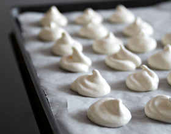

<ion-view view-title="Meringue française">

    <ion-content class="padding">


        <h1>Meringue française</h1>

        

        <p class="gras">Temps de préparation : 5 minutes</p>

        <p class="gras">Temps de cuisson : 60 minutes</p>

        <p class="gras">Ingrédients (pour 20 pièces) :</p>

        <ul>
            <li>- 4 blancs d'œufs</li>
            <li>- 250 g de sucre semoule</li>
        </ul><br>

        <p class="gras">Préparation de la recette :</p>

        <p>Quelques trucs pour bien réussir ces meringues: sortir les œufs du réfrigérateur un quart d'heure avant de les utiliser.</p>

        <p>Ne surtout pas mélanger de jaunes aux blancs d'oeuf.</p>

        <p>Ajouter une pincée de sel avant de battre les blancs en neige.</p>

        <p>Utiliser un récipient plus haut que large et utiliser un batteur électrique (bien plus rapide et moins fatiguant)!</p>

        <p>Battre les blancs en neige ferme.</p>

        <p>Ajouter le sucre par petites quantités tout en continuant de battre.</p>

        <p>Préchauffer le four à 120°C (thermostat 4).</p>

        <p>Déposer immédiatement de petits tas de meringue sur une plaque de four préalablement recouverte de papier sulfurisé.</p>

        <p>Cuire entre 30 minutes et 1 heure à 120°C.</p>

        <p>Au bout de 30 minutes, on obtient des meringues blanches et moelleuses.</p>

        <p>Au bout d'une heure, on obtient des meringues rosées, craquantes et fondantes avec un cœur moelleux.</p>

        <p>Une fois cuites, décoller les meringues délicatement dès la sortie du four et laisser refroidir sur une grille.</p>


    </ion-content>

</ion-view>